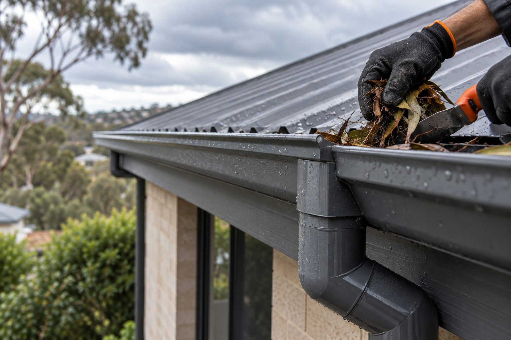

Gutter cleaning
Typical single-storey to larger or complex property reference.
AUD $250–$450+

Services / Gutters & downpipes
Good roof drainage directs water away from vulnerable edges and walls. Overflow, loose gutters and blocked downpipes should not be left unexplained.
Drainage is part of roof protection
Blocked gutters and downpipes can contribute to water damage around eaves, walls and roof edges. Cleaning is important, but a drainage issue may also need a repair or replacement assessment.
Adelaide price guide
Adelaide price guide in AUD for gutters, downpipes and roof-edge drainage.
Typical single-storey to larger or complex property reference.
AUD $250–$450+
Published add-on reference; access and blockage affect scope.
AUD $80+
Installed perimeter-gutter range per lineal metre.
AUD $37–$100 / lm
Alternative public guides also use AUD $180–$320 per downpipe.
AUD $32–$83 / lm
Specialist drainage detail; access can materially change price.
AUD $180–$320 / lm
Mesh or guard reference range, excluding unrelated repairs.
AUD $35–$60 / lm
Localised repair reference; replacement is often priced per metre.
AUD $200–$600
Sources reviewed 14 September 2026: public Adelaide/SA guides from Adelaide Roof Cleaning, The Quote Yard and The Plumb King.